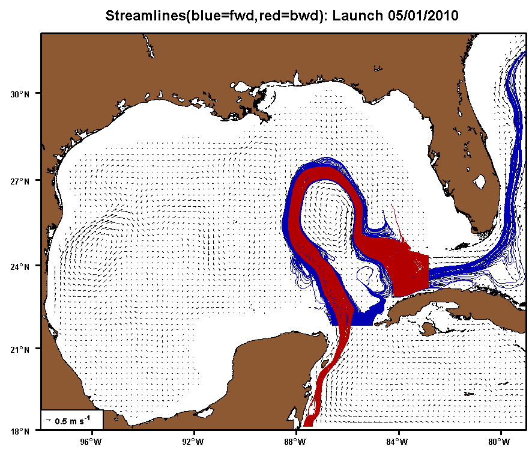
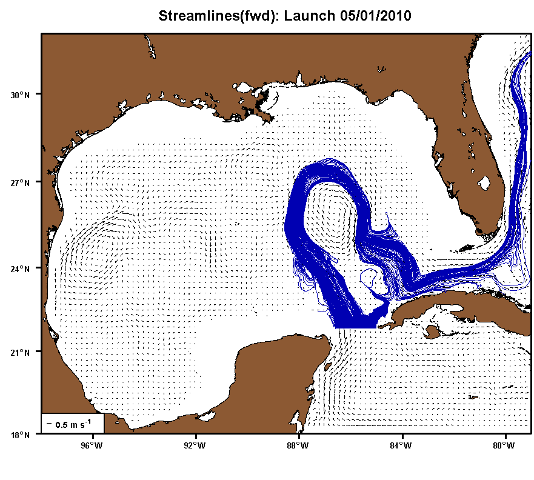
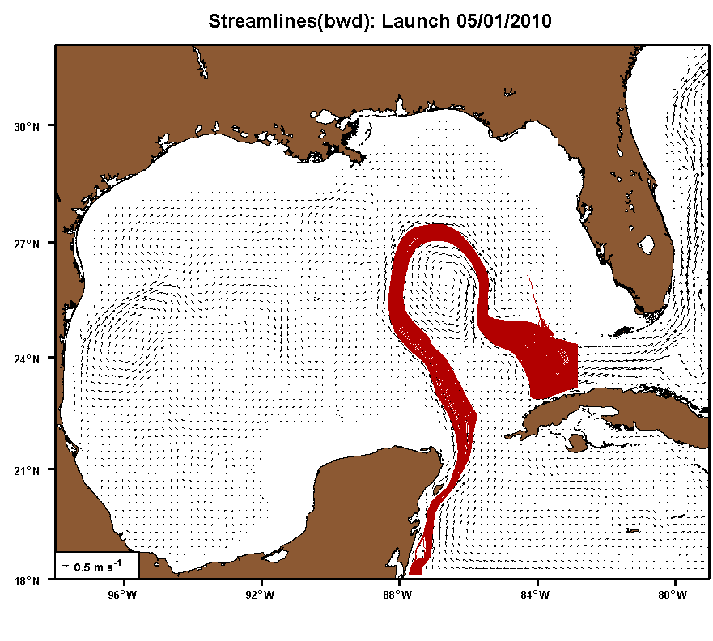

LCR Detachment/Separation in the GoM:
Streamlines (forward and backward): From May 1, 2010 to July 31, 2010.

Streamlines (forward): From May 1, 2010 to July 31, 2010.

Streamlines (backward): From May 1, 2010 to July 31, 2010.
